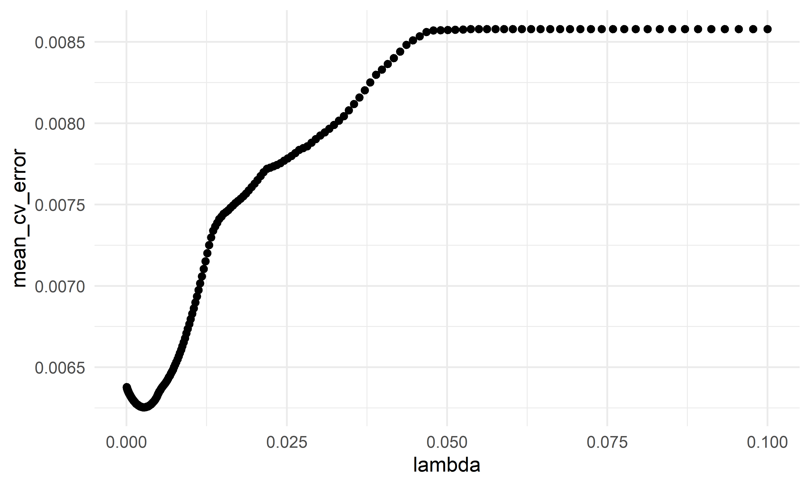

Factors to Death
Data Importing
source("data_preprocessing_backbone.R")
labor_data = read_csv("./data/CA_Labor.csv") %>%
janitor::clean_names() %>%
dplyr::select(-employment,-unemployment,-rank) %>%
rename(unemployment=unemployment_rate_per_cent)
land_data = read_csv("./data/CA_Land_Area.csv") %>%
janitor::clean_names() %>%
mutate(
location = ifelse(county %in% c("Los Angeles", "Orange", "San Diego", "Monterey", "San Benito", "San Luis Obispo", "Santa Barbara", "Santa Cruz", "Ventura", "Alameda", "Contra Costa", "Marin", "Napa", "San Francisco", "San Mateo", "Santa Clara", "Solano", "Sonoma", "Del Norte", "Humboldt", "Mendocino"), "costal", "inland")) %>%
dplyr::select(-rank, -state, -population)
ca_nonmedical_data = left_join(land_data, labor_data, by = c("county"))
demo_covid = demo %>%
mutate(cumulative_reported_deaths= as.numeric(cumulative_reported_deaths),
cumulative_cases = as.numeric(cumulative_cases),
death_rate = 0.01+cumulative_reported_deaths/population*100,
test = cumulative_total_tests/population*100) %>%
dplyr::select(county_name, death_rate, test,population) %>%
rename(county=county_name) %>%
group_by(county) %>%
summarize(death_rate=max(death_rate,na.rm = T),
test = max(test),
population = max(population)) %>%
filter(!county %in% c("Out of state","Unknown"))
vaccine = read_csv("./data/CA_covid19vaccines.csv") %>%
janitor::clean_names() %>%
group_by(county) %>%
summarise(
fully_vaccinated = sum(fully_vaccinated)
# total number of fully vaccinated people
) %>%
arrange(county) %>%
drop_na() %>%
filter(!county %in% c("Unknown", "All CA Counties", "All CA and Non-CA Counties","Outside California"))
hospital = read_csv("./data/CA_Covid19_Hospital.csv") %>%
group_by(county) %>%
summarize(all_hospital_beds = max(all_hospital_beds,na.rm = T),
icu_available_beds = max(icu_available_beds,na.rm = T)) %>%
dplyr::select(county, all_hospital_beds, icu_available_beds)
ca_medical_data = left_join(demo_covid, vaccine, by =c("county"))
ca_medical_data2 = left_join(ca_medical_data, hospital, by =c("county"))
ca_premodel_data = left_join(ca_medical_data2, ca_nonmedical_data, by = c("county")) %>%
relocate(death_rate) %>%
mutate(
vaccinated=fully_vaccinated/population*100,
labor_rate = labor_force/population*100,
hospital_bed = all_hospital_beds/population*100,
icu_bed = icu_available_beds/population*100
)%>%
dplyr::select(-fully_vaccinated, -population, -labor_force,-all_hospital_beds,-icu_available_beds)
skimr::skim(ca_premodel_data)| Name | ca_premodel_data |
| Number of rows | 58 |
| Number of columns | 10 |
| _______________________ | |
| Column type frequency: | |
| character | 2 |
| numeric | 8 |
| ________________________ | |
| Group variables | None |
Variable type: character
| skim_variable | n_missing | complete_rate | min | max | empty | n_unique | whitespace |
|---|---|---|---|---|---|---|---|
| county | 0 | 1 | 4 | 15 | 0 | 58 | 0 |
| location | 0 | 1 | 6 | 6 | 0 | 2 | 0 |
Variable type: numeric
| skim_variable | n_missing | complete_rate | mean | sd | p0 | p25 | p50 | p75 | p100 | hist |
|---|---|---|---|---|---|---|---|---|---|---|
| death_rate | 0 | 1.00 | 0.21 | 0.09 | 0.01 | 0.13 | 0.19 | 0.28 | 0.51 | ▂▇▅▃▁ |
| test | 0 | 1.00 | 367.42 | 171.84 | 104.51 | 277.33 | 312.06 | 402.06 | 983.95 | ▅▇▂▁▁ |
| land_area_sq_mi | 0 | 1.00 | 2685.85 | 3102.32 | 46.87 | 959.49 | 1535.34 | 3454.40 | 20056.92 | ▇▂▁▁▁ |
| unemployment | 0 | 1.00 | 7.33 | 2.12 | 4.42 | 5.97 | 6.96 | 8.22 | 17.37 | ▇▆▁▁▁ |
| vaccinated | 0 | 1.00 | 63.20 | 13.47 | 29.78 | 54.34 | 61.29 | 72.35 | 94.09 | ▁▇▇▇▃ |
| labor_rate | 0 | 1.00 | 44.16 | 5.95 | 30.47 | 40.29 | 44.59 | 47.75 | 61.19 | ▂▅▇▁▁ |
| hospital_bed | 2 | 0.97 | 0.32 | 0.39 | 0.08 | 0.18 | 0.22 | 0.29 | 2.79 | ▇▁▁▁▁ |
| icu_bed | 2 | 0.97 | 0.03 | 0.05 | 0.00 | 0.01 | 0.01 | 0.03 | 0.35 | ▇▁▁▁▁ |
- The data includes 58 observations and 10 variables. Now we are
interested on whether the death cases are associated with
area,populationandtesting_cases.
Data Description
point <- format_format(big.mark = " ", decimal.mark = ",", scientific = FALSE)
raw_deaths = ca_premodel_data %>%
ggplot(aes(x = death_rate)) +
geom_density(fill = "#69b3a2", color = "#e9ecef", alpha = .8) +
scale_y_continuous(labels = point)
raw_tests = ca_premodel_data %>%
ggplot(aes(x = test)) +
geom_density(fill = "#69b3a2", color = "#e9ecef", alpha = .8) +
scale_y_continuous(labels = point) +
scale_x_continuous(labels = point)
raw_land = ca_premodel_data %>%
ggplot(aes(x = land_area_sq_mi)) +
geom_density(fill = "#69b3a2", color = "#e9ecef", alpha = .8) +
scale_y_continuous(labels = point) +
scale_x_continuous(labels = point)
raw_unemployment= ca_premodel_data %>%
ggplot(aes(x = unemployment)) +
geom_density(fill = "#69b3a2", color = "#e9ecef", alpha = .8) +
scale_y_continuous(labels = point) +
scale_x_continuous(labels = point)
raw_vaccinated = ca_premodel_data %>%
ggplot(aes(x = vaccinated)) +
geom_density(fill = "#69b3a2", color = "#e9ecef", alpha = .8)
raw_labor = ca_premodel_data %>%
ggplot(aes(x = labor_rate)) +
geom_density(fill = "#69b3a2", color = "#e9ecef", alpha = .8)
raw_hospital = ca_premodel_data %>%
ggplot(aes(x = hospital_bed)) +
geom_density(fill = "#69b3a2", color = "#e9ecef", alpha = .8)
raw_bed = ca_premodel_data %>%
ggplot(aes(x = icu_bed)) +
geom_density(fill = "#69b3a2", color = "#e9ecef", alpha = .8)
ca_model_data = ca_premodel_data %>%
mutate(ln_tests = log(test),
ln_area = log(land_area_sq_mi),
ln_unemployment = log(unemployment),
ln_hospital = log(hospital_bed+0.01),
ln_bed = log(icu_bed+0.01)
) %>%
dplyr::select(-test,-land_area_sq_mi,-unemployment,-county,-hospital_bed,-icu_bed) %>%
filter(!ln_hospital %in% NA,
!ln_bed %in% NA)
plot_ln_test = ca_model_data %>%
ggplot(aes(x = ln_tests)) +
geom_density(fill = "#69b3a2", color = "#e9ecef", alpha = .8)
plot_ln_hospital = ca_model_data %>%
ggplot(aes(x = ln_hospital)) +
geom_density(fill = "#69b3a2", color = "#e9ecef", alpha = .8)
plot_ln_bed = ca_model_data %>%
ggplot(aes(x = ln_bed)) +
geom_density(fill = "#69b3a2", color = "#e9ecef", alpha = .8)
plot_ln_area = ca_model_data %>%
ggplot(aes(x = ln_area)) +
geom_density(fill = "#69b3a2", color = "#e9ecef", alpha = .8)
plot_ln_unemployment = ca_model_data %>%
ggplot(aes(x = ln_unemployment)) +
geom_density(fill = "#69b3a2", color = "#e9ecef", alpha = .8)
raw_deaths+raw_tests+raw_land+ raw_unemployment+raw_hospital +raw_bed+ raw_vaccinated+ raw_labor+ plot_ln_test+ plot_ln_area+ plot_ln_unemployment+plot_ln_hospital+plot_ln_bed
ca_model_data %>%
gtsummary::tbl_summary() %>%
gtsummary::bold_labels() %>%
as.tibble() %>%
knitr::kable()| Characteristic | N = 56 |
|---|---|
| death_rate | 0.20 (0.14, 0.28) |
| location | NA |
| costal | 21 (38%) |
| inland | 35 (62%) |
| vaccinated | 63 (54, 73) |
| labor_rate | 44.6 (39.9, 47.8) |
| ln_tests | 5.75 (5.63, 6.02) |
| ln_area | 7.38 (6.90, 8.17) |
| ln_unemployment | 1.94 (1.78, 2.11) |
| ln_hospital | -1.49 (-1.68, -1.21) |
| ln_bed | -3.71 (-3.87, -3.30) |
- The cleaned data includes 56 states and
ncol(ca_model_data)including death_rate, location, vaccinated, labor_rate, ln_tests, ln_area, ln_unemployment, ln_hospital, ln_bed. The data is extremely right-skewed and the natural logarithms are applied to each explortory continuous variables.
Correlation
ca_model_data %>%
dplyr::select(-location) %>%
GGally::ggpairs()
- The correlation between predictors are highly correlated, which is more than 0.95. This is because testing count may associate with population in the area empirically.
Modelling Fit
reg_full = lm(death_rate ~ ., data = ca_model_data)
reg_intercept = lm(death_rate ~ 1, data = ca_model_data)Model Selection
#forward Selection
step(reg_intercept, direction='forward', scope=formula(reg_full),trace=0) %>%
broom::tidy() %>%
mutate(term = str_replace(term, "^location", "Location: ")) %>%
knitr::kable(digits = 3)| term | estimate | std.error | statistic | p.value |
|---|---|---|---|---|
| (Intercept) | -0.560 | 0.193 | -2.899 | 0.006 |
| ln_unemployment | 0.127 | 0.041 | 3.059 | 0.004 |
| ln_area | 0.028 | 0.010 | 2.637 | 0.011 |
| ln_bed | 0.032 | 0.014 | 2.212 | 0.032 |
| Location: inland | 0.067 | 0.023 | 2.946 | 0.005 |
| ln_tests | 0.068 | 0.024 | 2.818 | 0.007 |
#backwards elimination
step(reg_full, direction='backward', scope=formula(reg_full),trace=0) %>%
broom::tidy() %>%
mutate(term = str_replace(term, "^location", "Location: ")) %>%
knitr::kable(digits = 3)| term | estimate | std.error | statistic | p.value |
|---|---|---|---|---|
| (Intercept) | -0.375 | 0.245 | -1.528 | 0.133 |
| Location: inland | 0.086 | 0.027 | 3.136 | 0.003 |
| vaccinated | 0.002 | 0.001 | 1.828 | 0.074 |
| labor_rate | -0.004 | 0.002 | -1.878 | 0.066 |
| ln_tests | 0.060 | 0.024 | 2.510 | 0.016 |
| ln_area | 0.026 | 0.011 | 2.438 | 0.019 |
| ln_unemployment | 0.093 | 0.044 | 2.139 | 0.038 |
| ln_bed | 0.035 | 0.014 | 2.479 | 0.017 |
#stepwise Selection
step(reg_full, direction = "both", scope=formula(reg_full),trace=0) %>%
broom::tidy() %>%
mutate(term = str_replace(term, "^location", "Location: ")) %>%
knitr::kable(digits = 3)| term | estimate | std.error | statistic | p.value |
|---|---|---|---|---|
| (Intercept) | -0.375 | 0.245 | -1.528 | 0.133 |
| Location: inland | 0.086 | 0.027 | 3.136 | 0.003 |
| vaccinated | 0.002 | 0.001 | 1.828 | 0.074 |
| labor_rate | -0.004 | 0.002 | -1.878 | 0.066 |
| ln_tests | 0.060 | 0.024 | 2.510 | 0.016 |
| ln_area | 0.026 | 0.011 | 2.438 | 0.019 |
| ln_unemployment | 0.093 | 0.044 | 2.139 | 0.038 |
| ln_bed | 0.035 | 0.014 | 2.479 | 0.017 |
# Use criterion-based procedures to guide your selection of the ‘best subset’
# chosen using SSE/RSS (smaller is better)
criterion_selected = regsubsets(death_rate ~ ., data = ca_model_data)
criterion_plot = summary(criterion_selected)
# plot of Cp and Adj-R2 as functions of parameters
par(mfrow=c(1,2))
plot(2:9, criterion_plot$cp, xlab="No. of parameters", ylab="Cp Statistic")
abline(0,1)
plot(2:9, criterion_plot$adjr2, xlab="No. of parameters", ylab="Adj R2")
The plots above show the Cp index and Adjusted 𝑅2 for various numbers of parameters. When choosing a model based on Cp criterion, we want to choose a model for which 𝐶𝑝 ≤ 𝑝, where 𝑝 is the number of parameters. From the Cp plot above, we should have either 4 parameters (3 predictors), 5 parameters (4 predictors), or 6 parameters (5 predictors). If we consider the principle of parsimony as well, this would suggest the 4 parameters (3 predictors) model. But if we choose the model with 5 parameters (4 predictors), which has the lowest value for Cp
Use the LASSO method to perform variable selection. Make sure you choose the “best lambda” to use and show how you determined this
ca_lasso_data = ca_model_data %>% mutate(
location=ifelse(location =="costal", 1,0))
# using cross validation to choose lambda
lambda_seq = 10^seq(-5, -1, by = .01)
set.seed(2022)
cv_object <- cv.glmnet(as.matrix(ca_lasso_data[2:9]), ca_lasso_data$death_rate,
lambda = lambda_seq, nfolds = 5)
cv_object##
## Call: cv.glmnet(x = as.matrix(ca_lasso_data[2:9]), y = ca_lasso_data$death_rate, lambda = lambda_seq, nfolds = 5)
##
## Measure: Mean-Squared Error
##
## Lambda Index Measure SE Nonzero
## min 0.002692 158 0.006254 0.001357 7
## 1se 0.019498 72 0.007608 0.001773 4# plot the CV results
tibble(lambda = cv_object$lambda,
mean_cv_error = cv_object$cvm) %>%
ggplot(aes(x = lambda, y = mean_cv_error)) +
geom_point()
# refit the lasso model with the "best" lambda
fit_bestcv <- glmnet(as.matrix(ca_lasso_data[2:9]), ca_model_data$death_rate, lambda = cv_object$lambda.min)
fit_bestcv %>%
broom::tidy() %>%
mutate(term = str_replace(term, "^location", "Location: ")) %>%
knitr::kable(digits = 3)| term | step | estimate | lambda | dev.ratio |
|---|---|---|---|---|
| (Intercept) | 1 | -0.251 | 0.003 | 0.534 |
| Location: | 1 | -0.066 | 0.003 | 0.534 |
| vaccinated | 1 | 0.001 | 0.003 | 0.534 |
| labor_rate | 1 | -0.003 | 0.003 | 0.534 |
| ln_tests | 1 | 0.051 | 0.003 | 0.534 |
| ln_area | 1 | 0.023 | 0.003 | 0.534 |
| ln_unemployment | 1 | 0.099 | 0.003 | 0.534 |
| ln_bed | 1 | 0.030 | 0.003 | 0.534 |
Since the stepwise selection techniques and the criterion techniques all chose the same model with 4 predictors, we recommend this as our final model. (The LASSO gave a very similar suggested model, with the addition of log area.) Our final model:
mlr_model = lm(death_rate~location+vaccinated+labor_rate+ln_tests+ln_area+ln_unemployment+ln_bed,data = ca_model_data)
mlr_model %>%
broom::tidy() %>%
mutate(term = str_replace(term, "^location", "Location: ")) %>%
knitr::kable(digits = 3)| term | estimate | std.error | statistic | p.value |
|---|---|---|---|---|
| (Intercept) | -0.375 | 0.245 | -1.528 | 0.133 |
| Location: inland | 0.086 | 0.027 | 3.136 | 0.003 |
| vaccinated | 0.002 | 0.001 | 1.828 | 0.074 |
| labor_rate | -0.004 | 0.002 | -1.878 | 0.066 |
| ln_tests | 0.060 | 0.024 | 2.510 | 0.016 |
| ln_area | 0.026 | 0.011 | 2.438 | 0.019 |
| ln_unemployment | 0.093 | 0.044 | 2.139 | 0.038 |
| ln_bed | 0.035 | 0.014 | 2.479 | 0.017 |
- As the interaction term has p-value < 0.05, we can conclude that ln(population) and ln(total_tests) have significant interaction at 0.05 significance level, hence the two variables will be included in the model with the interaction term.
All three of these methods agree on the same suggested model. This might give good evidence that we should explore this model further.
From the outputs above, we see that frost had a p-value close to 0.05. This might mean that the relationship between life expectancy and frost is weak. To determine if there is an association between illiteracy and HS graduation rate, we can refer to our matrix of plots in part a. The correlation between these two variables is quite strong (approx. 0.7), implying that including that including both of these variables in the model could result in poor coefficient estimation and inflated standard errors (due to multicollinearity). Our model selection techniques were able to “figure this out” and only HS gradation rate was included in the final models.
Modelling Diagnosis & Weighted Least Squares Regression
sd_function <- lm(abs(mlr_model$residuals) ~ mlr_model$fitted.values)
var_fitted <- sd_function$fitted.values^2
wt <- 1/var_fitted
wls_incidence <- lm(death_rate~location+vaccinated+labor_rate+ln_tests+ln_area+ln_unemployment,data = ca_model_data, weights = wt)
wls_incidence %>%
broom::tidy() %>%
mutate(term = str_replace(term, "^location", "Location: ")) %>%
knitr::kable(digits = 3)| term | estimate | std.error | statistic | p.value |
|---|---|---|---|---|
| (Intercept) | -0.567 | 0.241 | -2.356 | 0.023 |
| Location: inland | 0.081 | 0.029 | 2.785 | 0.008 |
| vaccinated | 0.002 | 0.001 | 1.347 | 0.184 |
| labor_rate | -0.003 | 0.002 | -1.246 | 0.219 |
| ln_tests | 0.065 | 0.025 | 2.576 | 0.013 |
| ln_area | 0.029 | 0.011 | 2.675 | 0.010 |
| ln_unemployment | 0.085 | 0.046 | 1.844 | 0.071 |
check_model(mlr_model, check = c("linearity", "qq", "normality", "outliers", "homogeneity", "vif"))
check_model(wls_incidence, check = c("linearity", "qq", "normality", "outliers", "homogeneity", "vif"))
- Ordinary Least Squares violates normal assumption
- The coefficient estimate for the
ln_populationpredictor variable changed somewhat and the model fit improved. - The residual standard error changed from 9.224 (in the simple linear regression model) to 1.199 in the weighted LS model. This shows that the predictions ffrom the WLS model are much closer to the actual observations than those from the ordinary LS model.
- R-squared improved in the WLS model. WLS model is able to explain more of the variation in exam scores compared to the OLS model.
CV
set.seed(2022)
# use 10-fold validation and create the training sets
train = trainControl(method = "cv", number = 10)
# fit the 4-variables model that we selected as our final model
model_caret = train(death_rate~location+vaccinated+labor_rate+ln_tests+ln_area+ln_unemployment+ln_bed, data = ca_model_data, trControl = train, method = 'lm', na.action = na.pass)
model_caret## Linear Regression
##
## 56 samples
## 7 predictor
##
## No pre-processing
## Resampling: Cross-Validated (10 fold)
## Summary of sample sizes: 51, 51, 49, 52, 50, 50, ...
## Resampling results:
##
## RMSE Rsquared MAE
## 0.07404814 0.4120571 0.05966561
##
## Tuning parameter 'intercept' was held constant at a value of TRUEmodel_caret$resample## RMSE Rsquared MAE Resample
## 1 0.04542436 7.158233e-01 0.04036246 Fold01
## 2 0.09564178 3.185436e-05 0.07344651 Fold02
## 3 0.05735306 3.725184e-01 0.05050860 Fold03
## 4 0.07528233 3.078636e-01 0.05997718 Fold04
## 5 0.05641814 5.340497e-01 0.05120324 Fold05
## 6 0.07235722 2.402190e-01 0.06018088 Fold06
## 7 0.08197426 4.776110e-01 0.06190731 Fold07
## 8 0.08782930 2.459130e-01 0.06642902 Fold08
## 9 0.09308560 3.665463e-01 0.07095667 Fold09
## 10 0.07511538 8.599950e-01 0.06168425 Fold10- From the output above, the overall RMSE (root mean squared error) is 0.081, which would mean our MSE is 0.007. Our MAE (mean absolute error) is 0.066. These measures show that this model is doing a good job at predicting responses for “new” data points. Additionally, the variance for these measures is relatively small, showing that these estimates are probably pretty close to the true predictive ability.
Conclusion
- We employed automatic search procedures, criterion based approaches, and the LASSO tech-nique to select a final model:
\(\hat{Death\;Rate}=-0.572+0.079*ln(location=inland)+0.002*vaccinated-0.004*labor\;rate+0.066*ln(test)+0.034*ln(area)+0.073*ln(unemployment)\)
- From this model, we can see that as the murder rate and average number of freezing days (frost) increase, the predicted life expectancy decreases, while increases in high school graduations and (log) population were associated with an increase in expected life expectancy. Overall, from our 10-fold cross validation, we see that our model has pretty good predictive ability for new points. However, this model was only built on data from the US, so it should not be used to predict life expectancy in other locations. Additionally, we noticed that Hawaii was a potential influential point – by exploring Hawaii’s role in our model, we may have slightly different conclusions.